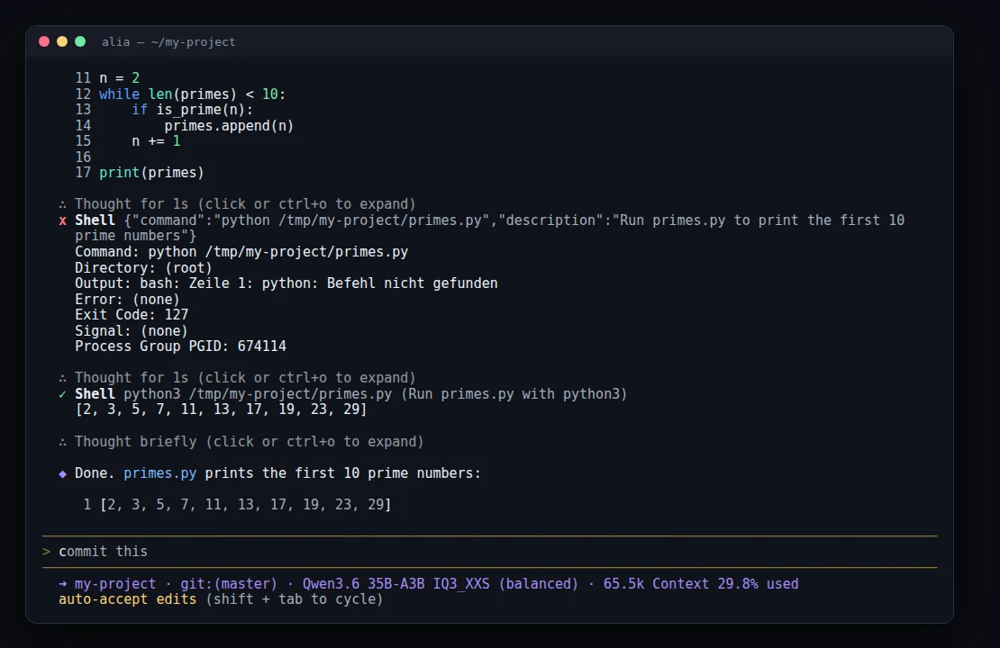
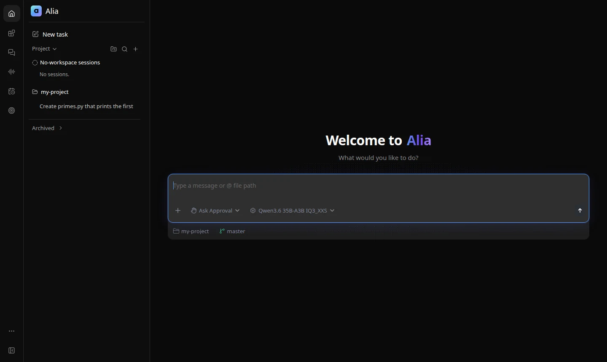
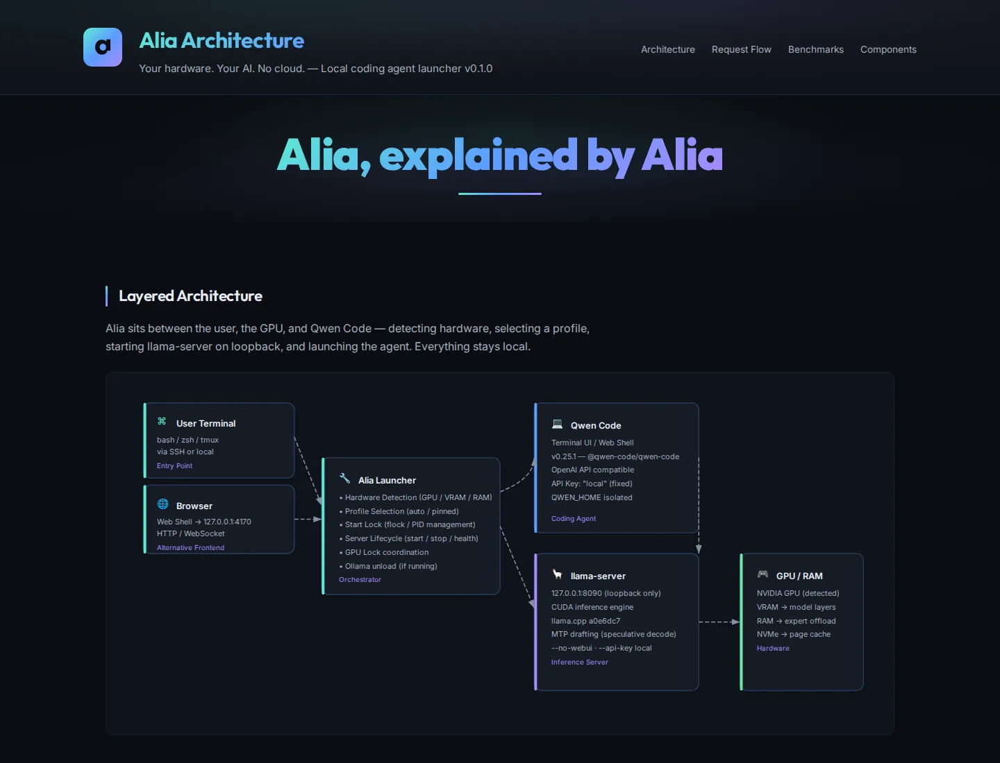

Hardware-aware profiles
Alia reads VRAM and RAM, then starts the best measured profile for your machine. Pin another one with alia use, compare them with alia profiles.
Alia detects your GPU, picks a benchmarked model profile, starts llama.cpp and opens a full coding agent in your terminal. No API key. No cloud. Nothing leaves your machine.
Three real prompts on an RTX 3070, no edits by hand: Alia writes a live GPU dashboard (one Python file, standard library only), polishes the layout, then finds and fixes its own bug with grep. Terminal parts are sped up as labelled; the polish round was slow because the server was swapping. The last clip is the result running in real time.
Why Alia
Alia reads VRAM and RAM, then starts the best measured profile for your machine. Pin another one with alia use, compare them with alia profiles.
A mixture-of-experts model activates only 3B parameters per token. Attention stays on the GPU, experts are offloaded to RAM.
The model's own MTP head drafts two tokens ahead. 65 % are accepted: +14 % speed at 4K, +10 % at 32K.
Built on Qwen Code: it edits files, runs commands, reads errors and fixes them. Resume anytime with alia -c. It asks before acting unless you choose --auto-edit or --yolo.
alia web opens the same agent as a web shell, bound to 127.0.0.1 only.
Every benchmark number on this page links to raw JSONL; configuration gaps are identified explicitly.
17 unused tools denied, no background memory calls, no follow-up requests, skills in ~/.agents/skills not loaded. The first prompt shrank from 22.8K to 10.9K tokens. A one-word reply on a warm server takes ~3 s (was 7 s).
Optional via MCP, off by default: alia mcp enable browser (Playwright MCP, text snapshots, no arbitrary JavaScript tool) and alia mcp enable search (DuckDuckGo, no API key, rate-limited). alia mcp test checks both. In tests, the local 35B model read a JavaScript-rendered page in 26 s and found a package version with source in 24 s.
Benchmarks
Token generation speed as the context fills up, with each profile's exact launch configuration. RTX 3070 8 GB, Ryzen 7 5800X, 16 GB RAM, llama.cpp a0e6dc7.
* Measured via Ollama with Qwen's own GGUF, not the unsloth GGUF and llama-server configuration this profile launches.
Share of hidden tests passed on real repository tasks. Longer bar = more tasks solved.
Eight frozen repository tasks, two runs each, solved headless by Qwen Code and scored by hidden tests; time is the mean per run. Switch with alia use <profile>, back with alia use auto.
All speeds use exactly the flags and context size each profile launches with (65,536 tokens for both). Long-context speed needs free RAM: with a browser and other apps open, the 35B model streamed from the SSD and fell to 24.6 tok/s at 32K and 9.7 at 60K. 32 GB RAM is recommended for long contexts. Quality scores come from separate runs. Raw results and methodology →
In use


Showcase
We asked Alia to visualize its own architecture. Running locally on the RTX 3070, it read its own source and wrote the whole page: an interactive diagram, an animated request flow and the measured numbers. Every prompt is published.

How it is built
Alia does not reinvent the agent loop or the inference engine. It adds what was missing: hardware detection, measured profiles, a safe server lifecycle and one command to start it all.
Install
npm install -g @qwen-code/qwen-code@0.25.1
python3 -m pip install -U "huggingface_hub[cli]"git clone https://github.com/ggml-org/llama.cpp ~/src/llama.cpp
cd ~/src/llama.cpp && git checkout a0e6dc7
cmake -S . -B build -DGGML_CUDA=ON -DCMAKE_BUILD_TYPE=Release
cmake --build build -j"$(nproc)" --target llama-servergit clone https://github.com/BEKO2210/alia
cd alia && ./install.sh && alia doctoralia # start agent
alia -c # resume session
alia status # server PID, profile, uptime
alia mcp # browser & web searchThe first start shows the exact model download (14.07 GB for the default profile) and asks before fetching anything. Check status with alia status, continue with alia -c, or manage tools with alia mcp.
Free, open source, and it runs on the hardware you already have.